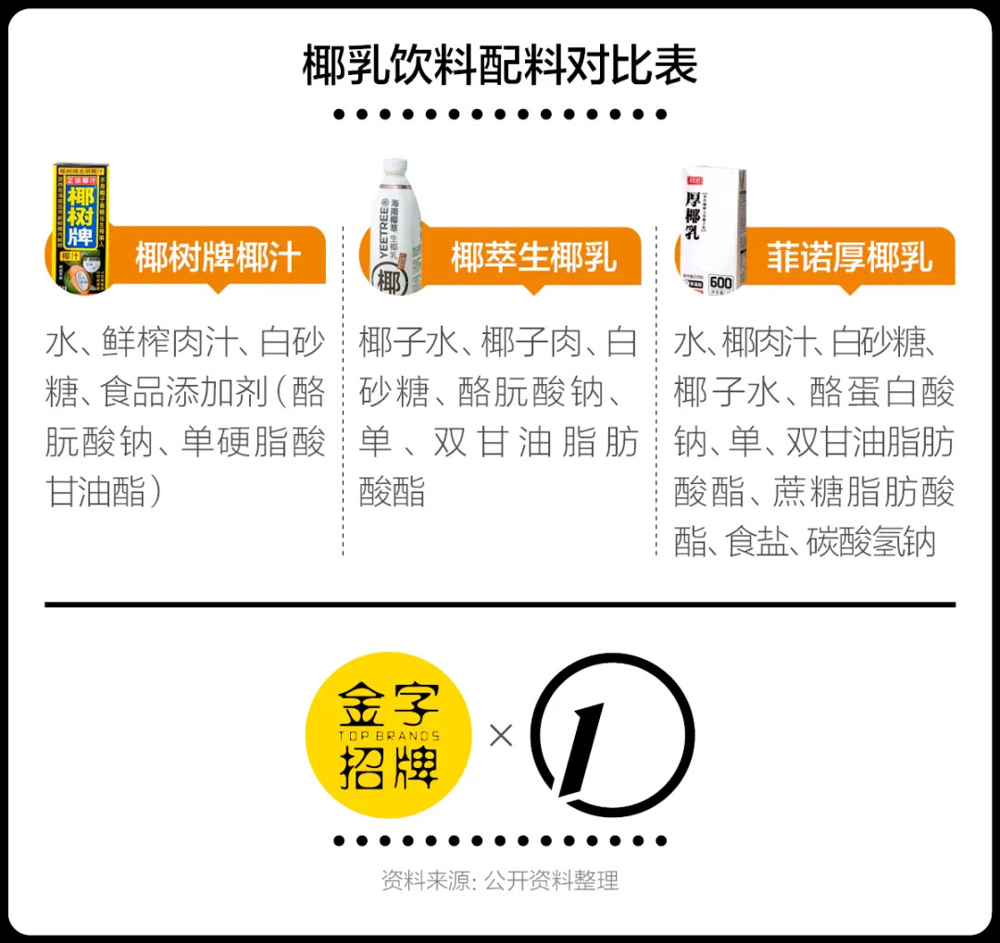
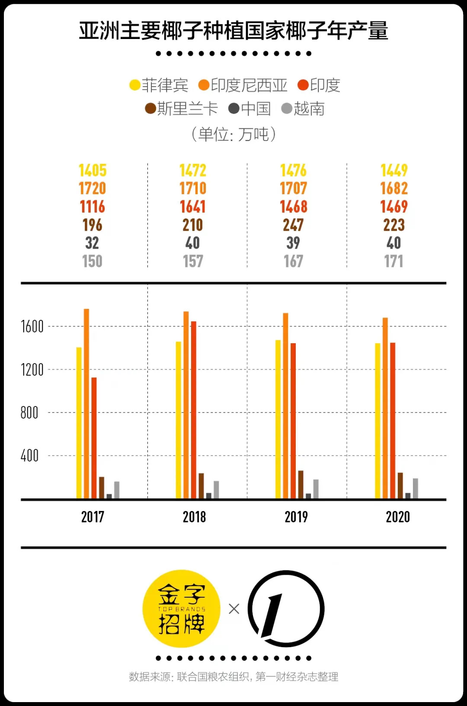
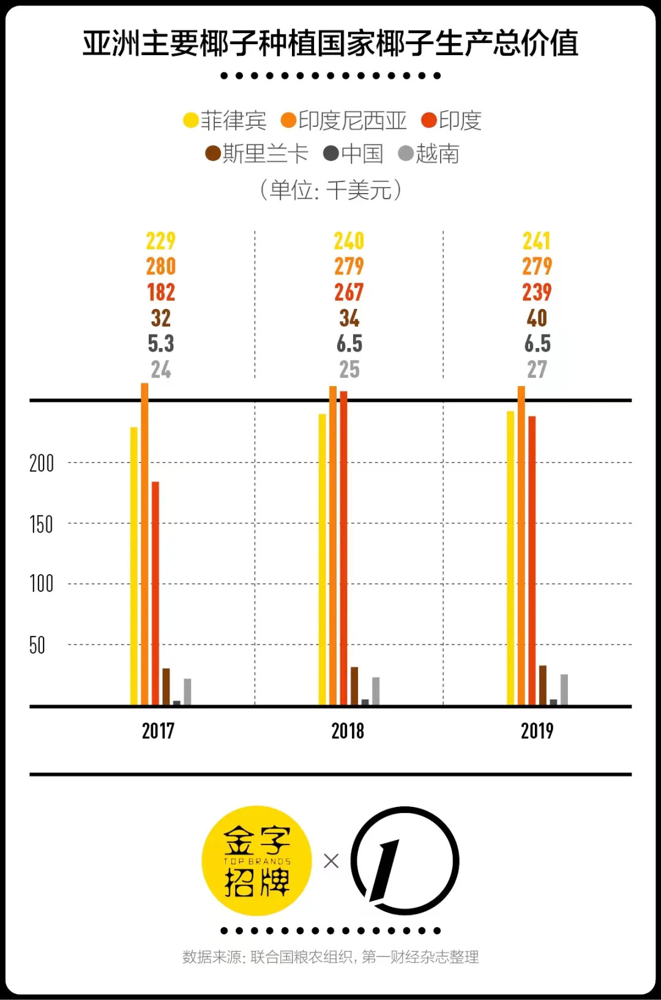
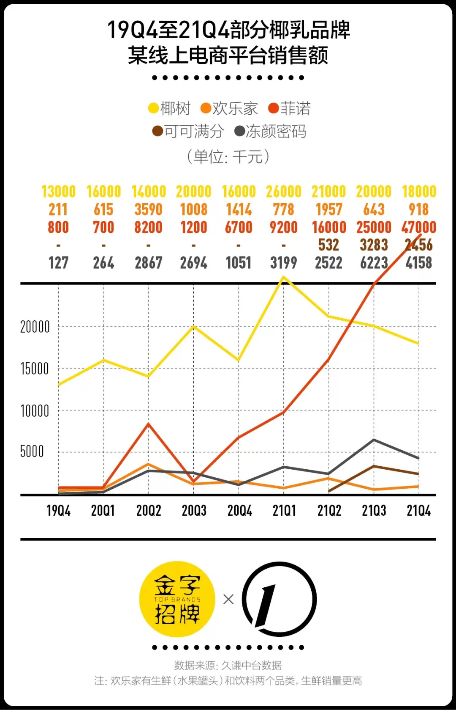

Driving into Dongjiao town in Wenchang city, the view through the front window is a patchwork of vibrant greens from the coconut trees that line the 32 kilometer coastal stretch, enveloping the town in a verdant embrace. These trees contribute to over 50% of Hainan province's coconut plantation area and yield.
When Fu Wei, an e-commerce seller in Haikou, first saw the crowded buying station in his hometown, he realized the demand for coconut had soared. He had seen the WeChat group chat for coconut purchases, where the price had risen from 2-3 yuan in previous years to 6-7 yuan. Little did he know, across the sea in mainland China, coconut had become a trendy ingredient in new-style tea and coffee shops.
This image displays the ingredients of three coconut milk beverages. The first one, “Coconut Tree Coconut Drink” is a classic brand that has been selling well in China for over 30 years. The latter two are new consumer brands of coconut drink.
With the rising popularity of Coconut flavor in freshly brewed coffee and tea beverages, coconut has suddenly become a highly sought-after and scarce commodity in China's consumer market. According to the 2022 China Beverage Industry Product Report by Kamen, coconut ranks first in frequency of use among the 40 sampled tea beverage brands, with 108 more mentions than the second-ranked strawberry. Additionally, 92.5% of the brands have introduced new products that incorporate coconut elements.
Southeast Asia provides direct supply
According to data from the Food and Agriculture Organization of the United Nations, China's coconut plantation area accounts for only 0.29% of the world's total and 0.32% of Asia's total. The "14th Five-Year Plan" for the high-quality development of the coconut industry in Hainan Province proposes to encourage enterprises to increase overseas coconut plantation areas to ensure the supply of raw materials for the development of the domestic coconut processing industry.
 The top three countries in the world in terms of coconut production are Indonesia, the Philippines, and India. Benefiting from the Regional Comprehensive Economic Partnership Agreement (RCEP), coconut-related products from Southeast Asia are within the scope of tariff exemption. Sources told YiMagazine that a leading enterprise in the industry has leased more than 200,000 acre of land in Sihanouk Province, Cambodia, and plans to build an exclusive raw material area in 10 years.
Another wave of the 'new milk' craze
According to sales data provided by Jiuqian Consulting to YiMagazine, on a certain online shopping platform, Fino surpassed industry leader Yeshu in Q3 2021 and has maintained a high growth rate. Its total GMV for the year reached 97 million yuan, which is higher than Yeshu's 82 million yuan
Currently, it's no longer difficult to find a cup of fresh coconut latte. Nobody can predict in what form the next ingredient used by chain milk tea and coffee shops will continue to cause a sensation, but at least coconut has seized the opportunity. In the foreseeable future, coconut milk will become a commonly used ingredient on brands' supply lists.